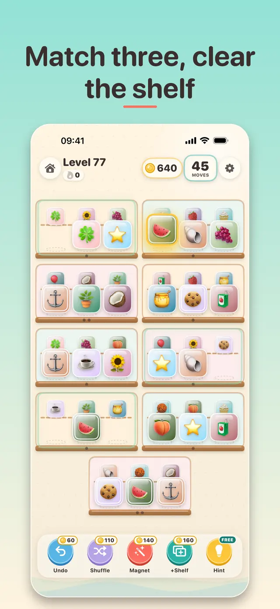
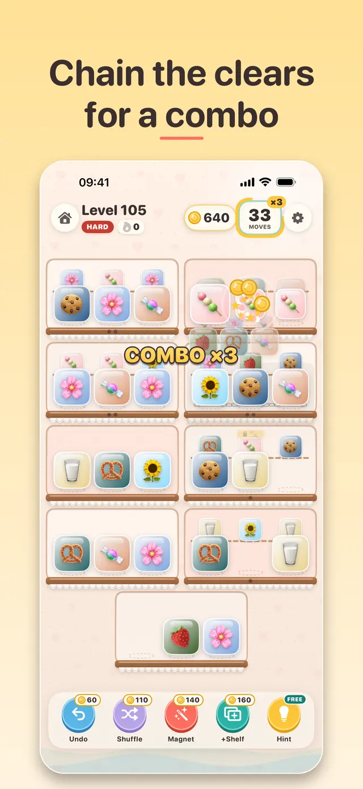
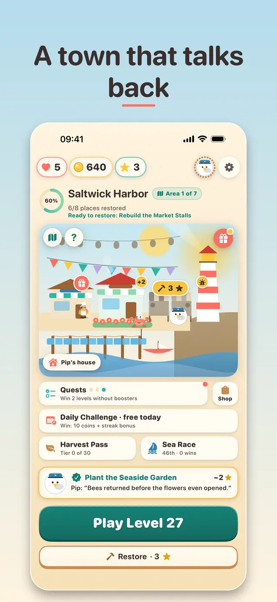
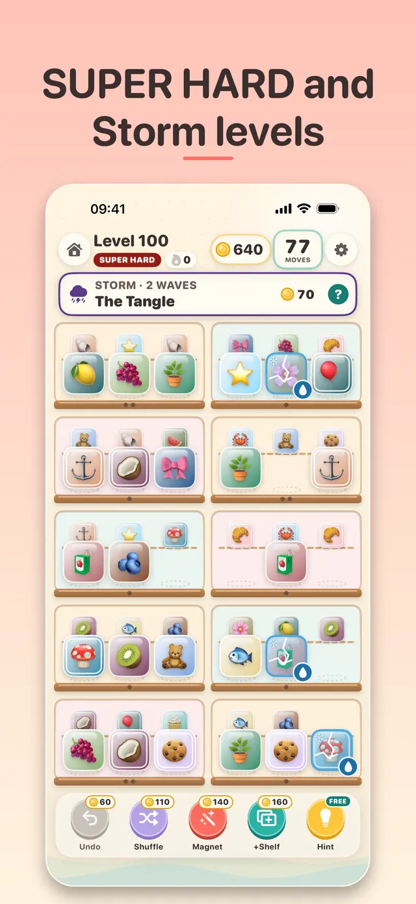
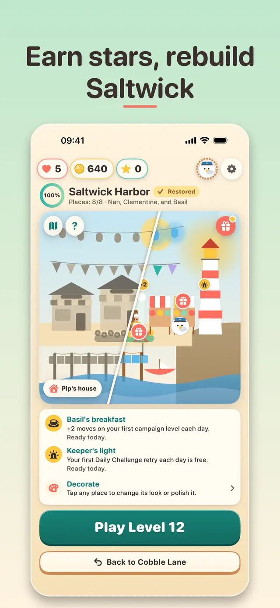
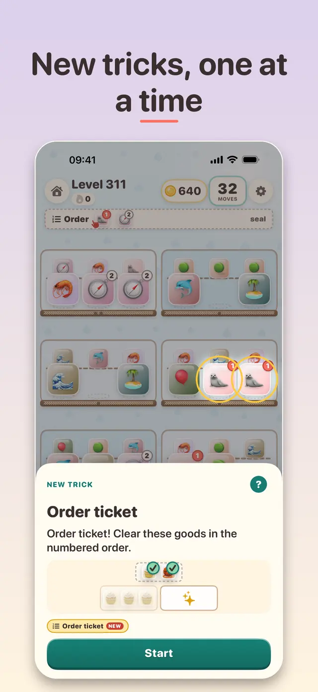
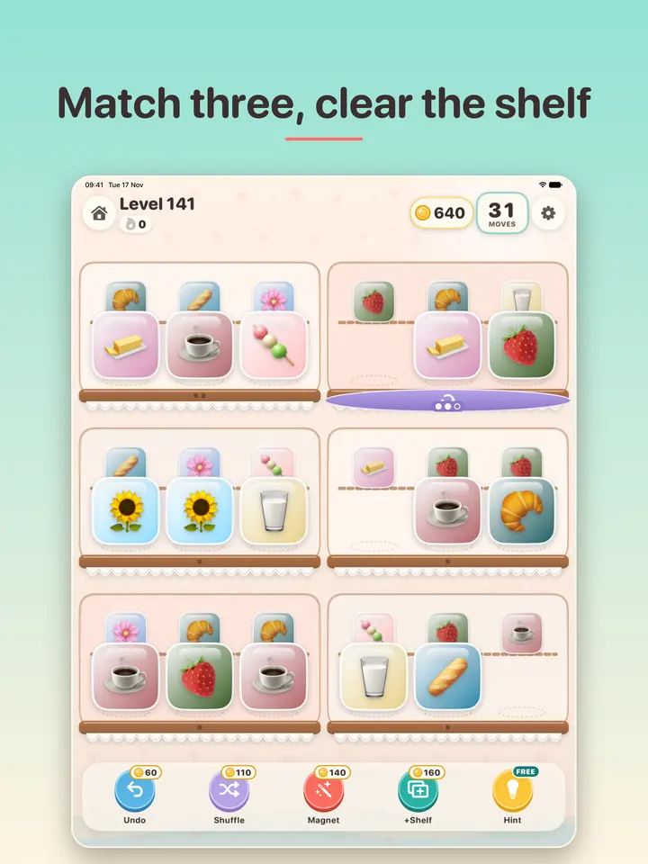
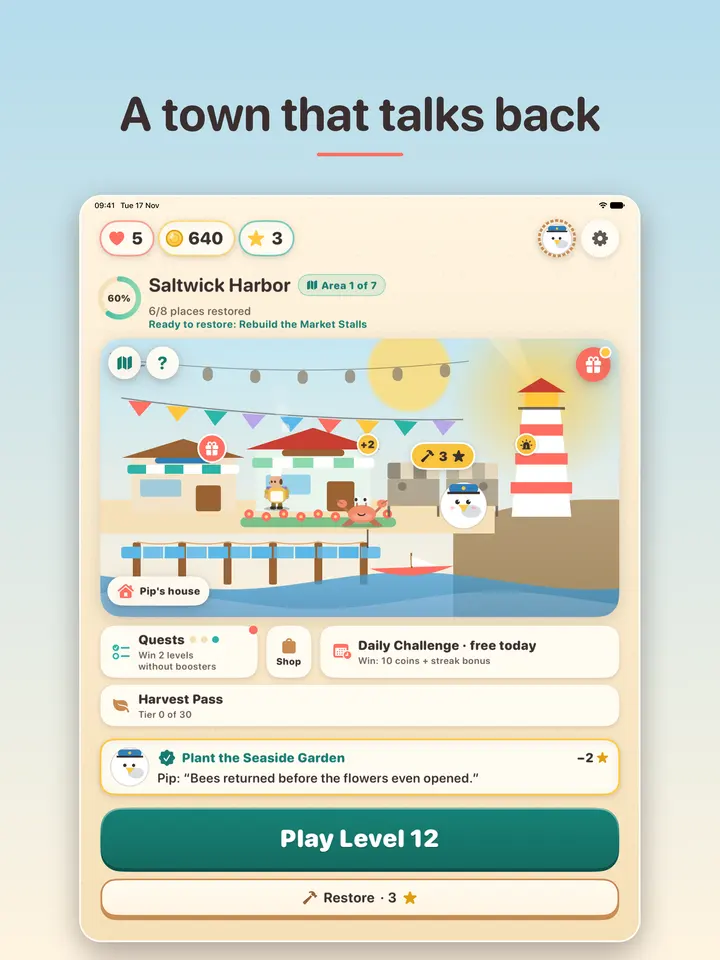

Press kit
Sortwick: Goods Sort Puzzle is a cozy goods-sorting game for iPhone and iPad by an independent developer. Everything on this page may be used to cover the game. Questions and review codes: support@sortwick.com.
Download the press kit (zip, about 30 MB)
Contains the icon (1024 px), the App Store screenshots of version 1.0.5 (ten for iPhone, two for iPad, English captions), the 28-second preview video (886x1920, with sound) and this text as README.txt.
Short description
Sortwick is a cozy goods-sorting puzzle for iPhone and iPad: tidy shelves, pop triples and bring the seaside town of Saltwick back to life, with residents who walk and talk, six new tricks, SUPER HARD levels and a real challenge. Free, plays offline, no account.
Long description
Tidy the shelves. Pop the triples. Bring a seaside town back to life, and meet the people who live there.
Sortwick is a goods-sorting puzzle with a cozy heart and a real challenge. Move items between shelves and make sets of three to clear them. Every level is solvable, and every win earns stars you spend restoring Saltwick, one lighthouse, café and lantern at a time.
A town that talks back. Seven areas to restore, from Saltwick Harbor to the Harbor Lights Festival, then islands beyond. Residents like Nan, Basil, Clementine and Mara move in once their homes are fixed: they stroll the promenade, and a tap gets you a line. Every restore is a short conversation: the resident speaks, Pip the harbor gull answers. Choose the look of each place you restore. The bakery and the lighthouse do something: Basil's breakfast adds 2 moves to your first level of the day, and the lighthouse keeper pays your first Daily Challenge retry.
New tricks, one at a time. Cracked shelves, chutes, carousels, counters, blizzards and order tickets join ice, locks, gifts, chains, crates, fog, rush levels and the belt. A Level Start sheet shows each new trick on the level's own goods before your first move, and the How-to-play guide keeps every rule one tap away. Tricks pair up, variants arrive, and double shifts send a second wave of goods onto the board.
A real challenge. Difficulty rises for real: HARD levels, SUPER HARD levels, storm levels, mystery levels and calm breathers. Boards come as towers, staircases, split columns, open shelves and more. Undo, Shuffle and Magnet boosters when you want them, never forced on you.
More to do. Daily gifts, quests, a Daily Challenge, a weekly Sea Race and a 28-day season. Collect cards in the album and unlock achievements. Decorate Pip's house with furniture you collect. Plays offline, no account needed.
Fair by design. Free to play. Purchases never change a level's solution; coins buy continues, lives and boosters. Album crates can't be bought, and their odds are always shown. Ads are optional videos; an ad between levels is rare by design (none in the first 100 levels, never after a loss), and Remove Ads turns those off.
Key facts
| Title | Sortwick: Goods Sort Puzzle (display name Sortwick) |
|---|---|
| Developer | Adrian Constantin Baluta, independent (solo) |
| Platform | iPhone and iPad, iOS 17 or later |
| Price | Free, with optional in-app purchases and ads |
| Languages | English, German, French, Spanish, Italian, Portuguese (Brazil), Romanian, Japanese, Korean |
| Release | First released 9 November 2026; current version 1.0.5, released 18 November 2026 |
| Size | 27 MB on the App Store (version 1.0.5) |
| App Store | apps.apple.com/app/id6825466170 |
| Game Center | Two leaderboards (Daily Challenge, weekly Sea Race) and 91 achievements |
| Lives and ads | Lives refill over time, and a free video gives one back. No ads in the first levels; reward videos always optional; ads between levels are rare by design (none in the first 100 levels, never after a loss, none for players with Remove Ads, Harbor VIP or a recent purchase) |
| Purchases | Coin packs (500 / 1,400 / 3,100 / 8,500 coins), Starter Pack (900 coins, 6 boosters, 1 hour unlimited lives), Harbor VIP (monthly: 60 coins a day, a weekly chest, an extra life, no ads between levels), Harvest Pass Premium (28-day season), Remove Ads |
| Privacy | No account and no servers of ours that receive player data; anonymous gameplay statistics with no personal data (can be turned off in Settings); progress stays on the device and in the player's own iCloud account. Privacy policy |
New in version 1.0.5
- iPad: Sortwick now fills the whole screen, in portrait and landscape.
- A tidier Home: a bigger town, with the season pass and Sea Race side by side.
- A clear view of every shelf: Pip's tips now have their own spot.
- Ten new sets of goods to sort.
- Polished text in all languages and smoother layouts on every device.
Icon
1024 px PNG in the zip. Please do not alter it.
Screenshots
The screenshots of the App Store page for version 1.0.5 are in the zip: ten for iPhone (1320x2868) and two for iPad (2064x2752), with English captions. Six iPhone and both iPad screenshots are shown here at web size.








Preview video
Web version above. The App Store preview of version 1.0.5 (886x1920, H.264, 28 s, with sound, 10 MB) is in the zip.
Contact
Adrian Constantin Baluta, support@sortwick.com. Review codes are available on request. Social: TikTok, Instagram and YouTube, all @sortwickgame. Please do not alter the icon, and use the App Store badge as Apple provides it (Apple marketing guidelines).